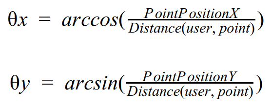
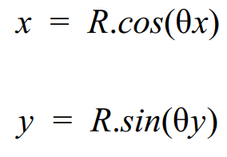
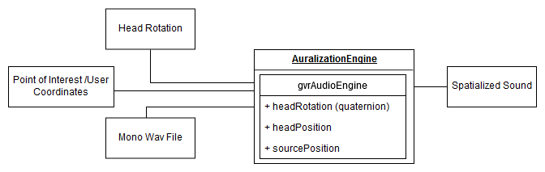

Introduction
Welcome to the Dev Notes section of our website!
Here we will be explaining the development challenges and decisions we made under the development stages of our system.
NOTE: This section is going to suffer multiple updates as soon as we add more features or development decisions.
At first glance of the system, we needed to gather opinion about what technologies to choose, and what primary decisions about the
system architecture and steps to do further upon development. So, we asked multiple teachers from our department to help us go to the correct
path.
Diogo Gomes and João Paulo Barraca were the teachers which prontly answered to us and with them, we got multiple ideas and possible features to be
added. One of the main difficulties we found was the technology choice (which languages, which database, which platform we could choose were some of the
questions asked). We would like to publicly thank them for the help provided, which got us on the right track for the begin of development.
After some team meetings with Guilherme Campos, we got the theory behind spatial audio and the main feature of the app explained, and we were ready to start
developing the whole system.
Today, we have weekly meetings to keep track of current development and for having feedback of it.
System Architecture

As SpatialGuide system main use is deployed in a smartphone, we needed to know if we could go to a cross-platform way (React Native / Cordova / Ionic for instance),
or a native way (Android). Because of the connection with the IMU Sensor (to gather head position), and the suggested use of a audio library (first glance
of spatial audio build) we needed to go to that path instead of having a web-based app. Here the decision was to build a native app with Android, which also
eases the development as all team has Java language knowledge.
Then we needed to know what technologies we should choose for the backend and which database to choose to store the data (points of interest, user information, routes, etc).
As some of the team members have already experience in Django and MySQL, we turned that way to build a traditional backend-frontend system,
which will communicate with the Android app via a REST API.
So, SpatialGuide will consist on a Android app supported by a web app that will store and send the data to be used in the app. The app runs on a Android
smartphone, and should have GPS sensor and Bluetooth, as well as to be capable of connecting stereo headphones via jack port.
The app will have an auralization engine that given a sound file will compute spatial sound (3D Audio) according to the users position.
For best audio experience we recommend the use of stereo headphones with noise cancellation.
User Stories
We gathered some user stories from people who are in the Tourism area (the scope of this app), so we at the
development stage are pretty sure and focused on what the app should have in order to complete user's requirements.

Jessica is an architecture grad student that is very interested in historical landmarks and modern art.
When she has some free time from classes she likes to travel and get in touch with new cultures.
As a born explorer, so it is very important for her to get the most out of the places she visits and so,
she frequently uses web advisors in order to get information on these new places. However, one of the things
that she finds utmost annoying is the fact that most of these web advisors require her to often look at her smartphone,
making it very difficult for her to get an absolute immersive experience. So, she began using SpatialGuide app.
This tool has hallowed her to fully enjoy the experience, as it works as a voice guide that tours the visitors on
the landmarks history and highlights. One of her favorite things about this app is the audio specialization feature
that lets her contemplate the landmarks, at the time she gets information on it.
On her most recent trip to New York, Jessica decided to try a ride on a tourist bus, as it’s an easy and comfortable
way to get to know a big town like this. However, due to the sound pollution, it was very difficult for her to
understand what the tourist guide was saying. So Jessica decided to use the SpatialGuide app. In fact, it was by
far easier for her to ignore the surrounding sounds and focus on the landmarks.

Steve, a 50 year-old tourist guide, is the older person working on his company. His vast experience makes
him one of the most required members of the company. Steve’s work ethics focus on guarantying his clients
have the best experience possible. Despite counting on his colleague’s help, Steve is a known “old school”
tourist guide, and so, he sometimes gets frustrated when dealing with new technologies. Recently his company
began looking for a tool that could help to give a better experience to the clients, without presenting itself
as a tech-challenge. So, Steve and his colleagues began to use the SpatialGuide app. The simplicity of this tool
easily allows them to insert new routes, as well as audio files that inform the tourist on the history and
highlights of the landmarks. Ever since, Steve has become increasingly familiar with the software and is now
able to fully understand his clients ultimate goal, as well as to easily provide them the best experience they
could have.
User Scenarios
For each user, we have the ideal scenario of system use. Here we get to know what SpatialGuide will help these users for, and which are the key features and usage of the whole system.
Use case: A Tourist who likes Historic places
Actor: John
Steps:
John is very interested in history
John hobby is travelling to visit historical places
John walks on the street
John connects head-tracking headphones on their smartphone
John connects to SpatialGuide app
John chooses route
John continues walking
John now can hear sound from different places
John now can hear the monuments talk to him like their talking to a person
John now can look to which monument he wants to hear from
John now can enjoy his hobby more deeply involved
Use case: Tourism Company Employee
Actor: Steve
Steps:
Steve works for a company that uses SpatialGuide App
Steve needs to add more tourist points on a specific area
Steve opens SpatialGuide Admin Panel on a web browser
Steve selects the desired point on the map
Steve opens app on Smartphone
Steve gives a name to the point
Steve adds it to the database
Steve chooses what narrative to play on which point
App Development
As said before, the Android app is one of the most important parts of the system, as it will be the most used for the users that will indeed use our system
and navigate through places (as referred in the user scenarios), so taking that in consideration it's crucial that the development of the app takes in consideration
multiple concerns such as usability, a clean and straight-up design, as well as being responsive in general usage.
The app architecture and main functioning was built to consume the system data via our own REST (Representational State Transfer) API (Application Programming Interface),
which provide all the data via the endpoints required for both way communication, which is how we interact with our system.
As for the design, we follow the Android Material Design guidelines and appearance, as it's commonly used on many Android apps today, and got inspiration from the most
used Android apps. We are not any design experts neither aspire to be it, however we built it thinking that the common user will know how to use the app without much effort.
Almost every action is done with few taps, and the app has icons and a color scheme that helps identify them. The colors used are inspired by our website, as we tried to be
consistent between the website and the app itself. Upon entering the app, we use the commonly used DrawerLayout, with the left side Navigation Menu, and a Toolbar so the user
can see the current status and indication on app usage.
We can sum the Android development in two stages: design and code. The design is made on the layout folder, placed on resources folder, by creating a XML file which will be the
layout of a part of the app. For simplicity we used Activities for each action instead of Fragments, and each file placed in that folder is used to draw and place UI widgets
(Text, Images, Progress Bar, Toolbar, etc) which are part of the whole app design.
Then, on the Java code, in the java folder we place the code responsible for handling the Activity of each file, only setting the content view on the onCreate function with
the same name as the layout file which we want to use.
In the App development, the majority of UI widgets are instantiated on the Java code using the library
ButterKnife - a library that uses Dependency Injection - as well as the
library Lombok for our data classes. ButterKnife binds all the views to variables on our code by only getting the view
IDs and call them once. Lombok injects getters/setters and constructors on our data/entity classes, so we can write less code and have them built for us.
As we use the devices' location to find the current user location so the map interactions and general usage is done, we use the Google Play Services API to find out user location given
customizable parameters such as location precision (GPS+Network, GPS only or Network only) and their refresh rates.
As we open the app, it has the basic user creation / access screens, to let users use the app and the system. By letting have an user account, each user can then make track of the routes and points,
and use the system anywhere. We also provide a way of set a new password, to recover system access
After the successful sign in, the user should then choose the route which will navigate on, which data is downloaded and stored on the internal device storage and then used upon selection.
The route data is fetched via our system REST API. To handle the HTTP requests to our custom built API, it's used the library Retrofit for a safe, easy and async request onto our API. Retrofit
then lets us use a factory that gets the data from a API and converts it into a POJO object, to be used on the Java side. We use the Google's
GSON converter factory, as it's the most common used
converter, and lets us then annotate on the data/entity classes the exact field names on the JSON object, and then it sets the object for us. As the Android uses its main thread for drawing, we cannot
stop that thread from running when doing network requests like we constantly do to gather/push information onto our system. So, Retrofit helps us handling the thread creation for each API call, which will
return one of two responses (successful / not-successful) via callback, and then we can handle it the way we want.
Our custom built REST API provides the information we need about routes, points of interest, among many other useful related information to the general app usage, as we will describe later. For the images
displayed in the app, we decided to use URLs and then handle the download and display in the app, instead of downloading and storing the images having them locally (which we could do, but it required more
work on manipulating them in the internal storage). It’s a interesting feature having a dynamic way of loading the images, because they can be changed. The images URL fetched via the REST API is then injected
on Android's ImageView using the library Picasso, which downloads and caches the image in a easy and straight-forward way. Picasso and Retrofit are libraries from the same developer team, so they handle the
thread creation and callback similarly.
After the route selection, the user will enter in the route map screen, which will track the user current location with GPS, and with the markers of the route points of interest, as well as the directions to the points
of interest, fetched with Google Directions API, and then all displayed on a Google Map fragment, provided by
Google's Maps SDK, as we integrate it on the app so users can see the current location and have a visual
feedback on using the app and guidance.
On the bottom we can see a options menu that provides the possibility of customize the route order of the points to visit by setting it using drag and drop in the selection menu, as well as the user can select
one of two modes for it: "Shortest Path", which will take on the shortest route between the points selected, and "Adventure Mode", which will randomize the order of the point visit. The map will then show the
recommended direction based on the order of the points selected or the mode selected..
When the user location approaches the point of interest (as we call this distance the Trigger Area), a popup window will appear with the point information, and the app will then play the sound spatialized
according to that point and to the user's head position.
Getting the head position
Initially, the goal was to fetch the head position (yaw, pitch, roll) of the user using a IMU Sensor (the equipment provided to us were InertiaCube BT).
However, as the device's SDK and Bluetooth had issues on how to get the coordinates, and spend lots of time trying to fix the problem, we switched to another
way to get the user head position, with simply using another smartphone to provide the users head position with the gyroscope sensor of the smartphone.
That way, we can easily attach a smartphone to the headphones to test this approach, and use Bluetooth to communicate with both devices (SpatialGuide app and
head position app). For now, it's a easy solution to our problem, given the deadline. For this communication to work, we need to develop another app for the
"sensor smartphone", being able to communicating both ways.
Then we can provide the user position to the auralization engine to then compute the spatial audio according to the user position and the position related to
the point of interest.
Android smartphones have a big array of sensors. For the tracking of the head rotation we
used two common sensors: the magnetic sensor, and the accelerometer sensor. The
accelerometer sensor measures the acceleration force applied in all three axes (x,y,z),
it also takes into account the gravity. It is an hardware sensor and is mostly used for motion
detection. The magnetic sensor measures the magnetic field, it is also an hardware sensor
and it is used for compass.
Combining this two sensors it is possible to obtain a calibrated head rotation using the native
android methods getRotationMatrix and getOrientation. getRotationMatrix creates the
rotation matrix defined between both sensors, and the getOrientation generates the values
for pitch/yaw/roll based on that rotation matrix.
Then it will pass this values into a byte buffer and send this buffer to the smartphone with the
application through bluetooth.
Bluetooth Communication
Since the early stages of development we decided to implement the communication between
sensor and application with bluetooth., in order to make the system easy to use and less
cumbersome to the user. As long as the cell phone with the SpatialGuide app has the name
SpatialDemo and it’s paired with the sensor device, the connection and data trade between
them will be automatic. The bluetooth communication is done through a class named
BluetoothConnectionService that contains several threads:
● AcceptThread: thread that accepts a connection
● ConnectThread: thread that tries to connect to a certain device
● ConnectedThread: thread that tries to send data through bluetooth
The sensor searches for its list of paired devices for a device named SpatialDemo, if it finds
one, it will try to connect to it through the ConnectThread. If the connection failed, then the
process starts anew, otherwise the connection is accepted. When the tracking sensors
detect some change on the rotation, the bluetooth will try to send its the byte buffer created
mentioned above through its output stream. The SpatialGuide app will receive these values
and convert them back into floats and update the auralization engine with this new data.
Auralization Engine
For the implementation of the auralization we opted to use the Google’s Resonance Audio. Resonance audio is a SDK that aims to create spatialized audio for AR and VR environments. It supports multi platforms (such as Unity, Unreal, FMOD, Web, wwise, digital workstation, Android and iOS) and streamlines the implementation of na Auralization engine.
Resonance Audio takes into account the mobile’s limited resources, so it is optimized for those devices. As we were working on within a limited time frame, creating our own audio engine was prohibitive, and as this is a powerful optimized tool for mobile devices, we have decided to implement Resonance Audio on SpatialGuide system.
As Resonance Audio was made for interactive virtual environments, we have to define the position and rotation for the user on this virtual world.
Implementation:
We created a class named AuralizationEngine, there we implemented Resonance Audio. For it to work, it needs the following atributes
+ GoogleVR’s audio engine(GvrAudioEngine)
+ sound source ID (sourceID).
Besides this attributes, it was defined a reference to a thread called soundplayThread.
When the user enters the trigger area, the system will initialize the AuralizationEngine passing a sound file name. It starts by initializing gvrAudioEngine, and it starts a new thread to load the named sound file. It is also needed to define a user position in the virtual world, it was defined that the user it’s always in the center of that world (x=0; y=0; z=0, this axis is based on the right handed OpenGL axis). For now it is also defined that the sound is at position (0,0,0) but that will change immediately in another function.
When the GPS updates the user position or when the system detects that the rotation of the head changed, the AuralizationEngine’s update method is invoked that accepts as input the GPS coordinates of the user/point of interest and the head’s rotation as pitch yaw and roll angles. Knowing that the user is in the center of the axis, the position on the virtual world of the point of interest (position of the source of sound) is calculated accordingly. As in an open space, the human ears cannot distinguish between a far loud sound and a low close sound, we decided to make the virtual distance between user and the sound source a constante (R=1). To discover this virtual position at a distance R, first we need to know the angle between user and point of interest, for such we used the following formulas:

After we discover the angle formed between user and point, we need to find the projection of that angle for a distance of R=1.
For that we use the following:

Then you can updated the sound source position of the gvrAudioEngine using this coordinates using the setSoundObjectPosition method passing these coordinates alongside the sourceID that we want to update. It is also needed to update the user’s head rotation. As gvrAudioEngine accepts quaternions, first we need to convert from euler angles to quaternion and then we pass this quaternion to the method setHeadRotation.
After any change made to the Resonance Audio, it is recommended to use gvrAudioEngine.update in order to confirm the changes made.
Sound is played in a thread created by the auralization engine. When the user enters a new
tigger area, the old thread will be stopped, the sound unloaded from the gvrAudioEngine and
the AuralizationEngine will start anew with the new values for that point of interest.
With this methods, the gvrAudioEngine will be able to play a spatialized sound on a virtual
world built around real world values.

Backend Development
As previously refered the Backend has a very important job on our system. It is the one responsible for the communication between the Database and the Android app. It also provides
a friendly interface to the Administrators, allowing them to easily manage the features required by the Android app.
The option for Django, as our web framework, was taken considering not only the familiarity of some
team members with it, but also it's versatile features. Hence, and foccusing on its security characteristics, Django provides security when handling user information. This way we can
give our users a safe environment.
MySQL was our choice for the main Database due to its good performance in case the product goes to production. MySQL stores all of our data, e.g.
routes, points and user information. Our media is stored in Google Drive, using Google Drive API,
however the links and identifiers, responsible for accessing the images and sounds, are still kept on the Database.
The communication between the Android app and the Backend is made through a Django REST API, based
on GET and POST requests, sending the data in JSON format. This way we can assure a good service to our clients.
As for the Administrators web interface, we used the html templates based on Bootstrap to create our html views.
After the Administrator login, he can find a navbar that provides several options:
Routes: on this option, the Administrator is presented with a list of all the Routes available in the Database with some basic information. It's also available the option of edit each Route attributes or navigate to the Route page with all the it's information. There is also a button that redirects the Administrator to the add Route page.
Add Routes: here it's presented to the Administrator a page with a form where he can insert the information about the new Route he is about to create.
Points: displays a list of all the Points in the Database and some basic information about them. On this page there are three buttons that allow the user to create, edit or remove Points.
Add Point: shows a form and a world map. Here it's possible to create a new Point typing all its atributes and also choosing the Point's coordinates by clicking on the desired location
Heat Map: displays a map where its possible to observe throught heat points the most frequented zones by the users while using the Android app.
User Suggestions: here is shown to the Administrator the locations and comments left by the users who would like to add a Point to the app.
User Comments: exibits a list of comments left by the users at a specific Point.
Register new User: Allows for the register of a new Administrator account.
Finally, on the top right corner, the Administrator can observe the username of its current session and a logout button.
What is Next?
We feel our system is almost ready to ship to production. However, we also know that this system has much more potential and could be enhanced with some more
features that will overall improve all system in the future.
The app could be improved by code refactoring and architecture restructuring, as well as offering the ability to support offline usage, and other features such
as more customization and user interaction to provide a better user experience (Street View, etc).
What's left to be done in the current and final development stage:
- System UI/UX improvement;
- Develop and embed a IMU sensor on headphones;
- Deploy and test the system outdoors (possibly with a real Tourism company);
- Hunting / fixing wild bugs it may have;
- Build point information screens;
- Offer a streaming tourist guide talk while on bus, for example.
Time Sheet
Here you can see the time each team member spent on working this project.
NOTE: it will redirect to a Google Sheet file.